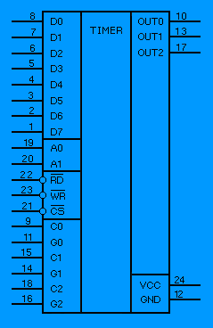

www.spetsialist-mx.ru
САЙТ О ПК "СПЕЦИАЛИСТ" И ЕГО КЛОНАХ
| |
|
| ГЛАВНАЯ | |
| МИКРОПРОЦЕССОР | |
| КОНТРОЛЛЕР НГМД | |
| ПАМЯТЬ | |
| ИНТЕРФЕЙСЫ | |
| КОНТРОЛЛЕР ЦВЕТА | |
| ПРОГРАММЫ | |
| ИГРЫ | |
| СПЕЦИАЛИСТ МХ2 | |
| ПЛИС | |
| ССЫЛКИ | |
| ОБРАТНАЯ СВЯЗЬ |
ПК "СПЕЦИАЛИСТ МХ"
В 1991 г. любителем из г. Магнитогорска Леонидом Николаевичем Афанасьевым была разработана схема доработки "Специалиста". Доработка размещалась на небольшой печатной плате, которая присоединялась к "Специалисту" и в результате из обычного "Специалиста" получался гораздо более совершенный компьютер. Усовершенствованный "Специалист" получил название "Специалист MX".
Первоначально любительский компьютер "Специалист МХ" родился путём доработок базовой схемы "Специалиста". Технические характеристики ПК таковы:
- тактовая частота процессора - 2 МГц;
- объём оперативной памяти - до 512 кБайт;
- объём постоянной памяти - до 48 кБайт;
- графический экран - 384 Х 256 точек.
Компьютер включает в себя универсальный параллельный интерфейс, программируемый таймер, интерфейс связи с принтером (типа "Centronics"), 16 - ти цветный контроллер цвета. Предусмотрено также подключение контроллера дисковода. При разработке новой схемы была сделана ориентация на применение более современных типов микросхем, в основном серии К555 (КР1533), а также заложена возможность применения различных типов микросхем памяти (К565РУ5 / РУ7, К573РФ2 / РФ4).
Изменение архитектуры компьютера было проведено таким образом, чтобы можно было пользоваться любым программным обеспечением от ПК "Специалист" без бесконечной перепрошивки ПЗУ. Для этого Афанасьев применил ряд оригинальных решений. В частности, из основного адресного пространства микропроцессора К580ВМ80 (0000H...FFFFH) ПЗУ было полностью исключено, то есть почти всё (почти - потому, что участок FFC0H...FFDFH использовался для обмена данными между страницами ОЗУ и ПЗУ, а участок FFE0H...FFFFH занимали порты различных устройств) адресное пространство занимало ОЗУ объемом 64 кБайт. ПЗУ было подключено как дополнительная страница памяти с максимально возможным объёмом 48 кБайт (0000H...BFFFH). Первые 6 кБайт ПЗУ занимала BIOS и специальная файловая операционная система с широкими функциональными возможностями  RAMFOS версии V5.3 и старше (для просмотра *.pdf файлов можно использовать Adobe Acrobat 9). Еще 10 кБайт ПЗУ занимали наиболее употребительные программы, такие как текстовый редактор, дизассемблер, отладчик и ассемблер. Остальные 32 кБайт ПЗУ были отведены под ROM - диск пользователя. Кроме страницы ПЗУ, "Специалист MX" имел от 1 до 8 страниц дополнительного ОЗУ используемого под RAM - диск. Объём каждой дополнительной страницы ОЗУ - 64 кБайт. Управление RAM и ROM - дисками осуществлялось операционной системой RAMFOS. Стандартный "Специалист МХ" Афанасьева имел основное ОЗУ - 64 кБайт, дополнительную страницу ОЗУ для RAM - диска - 64 кБайт и ROM - диск с операционной системой RAMFOS и вспомогательными программами - 16 кБайт. Всё написанное подчерпнуто из брошюры "Руководство пользователя к системному пакету программ RAMFOS для ЛК "Специалист_МХ" Леонида Афанасьеа.
RAMFOS версии V5.3 и старше (для просмотра *.pdf файлов можно использовать Adobe Acrobat 9). Еще 10 кБайт ПЗУ занимали наиболее употребительные программы, такие как текстовый редактор, дизассемблер, отладчик и ассемблер. Остальные 32 кБайт ПЗУ были отведены под ROM - диск пользователя. Кроме страницы ПЗУ, "Специалист MX" имел от 1 до 8 страниц дополнительного ОЗУ используемого под RAM - диск. Объём каждой дополнительной страницы ОЗУ - 64 кБайт. Управление RAM и ROM - дисками осуществлялось операционной системой RAMFOS. Стандартный "Специалист МХ" Афанасьева имел основное ОЗУ - 64 кБайт, дополнительную страницу ОЗУ для RAM - диска - 64 кБайт и ROM - диск с операционной системой RAMFOS и вспомогательными программами - 16 кБайт. Всё написанное подчерпнуто из брошюры "Руководство пользователя к системному пакету программ RAMFOS для ЛК "Специалист_МХ" Леонида Афанасьеа.
СЕЛЕКТОР АДРЕСОВ
Все прилагаемые схемы даны относительно базовой схемы компьютера "Специалист" (см. схему). В связи с этим обозначения элементов, соответствующих базовой схеме, приведены в тексте и на схемах в круглых скобках. При этом за наклонной чертой следует номер вывода микросхемы. Необходимые предлагаемые изменения базовой схемы сосредоточены в схеме "Селектора адресов". Эту схему лучше всего реализовать на отдельной плате размером 70 х 130 мм.
{kind=link}
U7 - подключается к выводу 6 DD44 порта клавиатуры, который отключается от вывода 4 DD5;
БШФ - подключается к выводу 1 DD49, DD50, который предварительно отключается от вывода 12 DD45;
VA - подключается к выводам 2, 15 DD51, предварительно отключенных от DD14;
PZU - подключается к выводам 24, 21. Предварительно эти выводы должны быть отключены от шины питания +5 В и объединены между собой. Будьте внимательны - питание других микросхем не должно остаться подключенным к выводам 24, 21 ИМС ПЗУ;
V1, V2, V3 - подключаются соответственно к выборкам линеек К565РУ6 (3), которые предварительно отключаются от DD14, DD19.1. Эти линейки становятся RAM - диском 48 кБайт. Если у Вас установлена линейка К565РУ5, тогда ее выборка (вывод 15) подключается к цепи VR, a V1, V2, V3 не используется;
V5 - подключается к выводам 15, вновь введенной линейки ИМС К565РУ5, размещенной вторым этажом поверх любой линейки К565РУ5 и включенной в схему ПК по приведенной схеме. Остальные выводы просто подключаются к схеме компьютера. После подключения платы "Селектора адресов" следует опробовать тестом работу компьютера. Если всё в норме, то можно записывать и установить ПЗУ с программами в порядке, указанном в таблице на странице программ. Готовая прошивка сочетает в себе RAMFOS и ROM - диск пользователя.
Принцип работы "Селектора адресов" следующий. При включении ПК и сбросе вывод триггера D4/9 устанавливается в "1". На инверсном выводе D4/8 присутствует "0", который включает транзисторы VT1, VT2 - подаётся питание на выводы питания ПЗУ ROM - диска. Начинается начальная работа "Загрузчика". Программа после инициализации ПК обращается к ячейке FFFCH, отключая все RAM / ROM - диски. Процессор может работать с основным ОЗУ (0000H...FFDFH) - на выводе D9/6 появлется "0", разрешая обращение к выводам /CAS основного ОЗУ. При обращении к адресам FFE0H...FFFFH выбираются соответствующие порты устройств дешифратором DDВУ (см. таблицу распределения памяти). При записи в ячейку FFFDH числа от 0 до 7 подключается для работы соответствующая страница RAM - диска (появляется "0" на выводе D9/6, разрешая обращение к выводам /CAS RAM - диска). А при обращении к ячейке FFFEH подключается страница ROM - диска (см. выше по тексту).
{kind=link}
{kind=link}
{kind=link}
После сборки "Селектора адресов" рекомендуем реализовать и усовершенствованый узел сброса.
Узел сброса характеризуется стробированностью обоих фронтов формируемого импульса сброса. Это обеспечивает чёткую работу функции сброса и полностью исключает некорректный режим работы микропроцессора, проявляющийся в искажении содержимого оперативной памяти.
 Последняя разработка схемы ПК от неизвестного автора предоставленна на дискетах автором Л. Н. Афанасьевым. Здесь реконструкция схемы от Fifana.
Последняя разработка схемы ПК от неизвестного автора предоставленна на дискетах автором Л. Н. Афанасьевым. Здесь реконструкция схемы от Fifana.

Фото оригинального (вверху) ПК "Специалист МХ" состоящего из двух плат от автора Афанасьева Леонида Николаевича (мелкая плата - контроллер дисковода) и собранного пользователем форума zx.pk.ru Байкалом на базе Специалиста - М (фото внизу).
ТАЙМЕР К580ВИ53
Программируемый таймер К580ВИ53 вырабатывает программно - управляемые временные интервалы при работе в одном из шести режимов. Структурно он состоит из трёх независимых идентичных программируемых шестнадцатеричных вычитающих счётчиков. Счётчики работают в двоичном или двоично - десятичном коде. Обмен информацией (прирост управляющего слова в счетчике, загрузка счетчиков, чтение показаний счетчиков) идёт во внутренней магистрали данных.
При работе счётчиков на входы C0…C2 подают от внешнего источника тактовые импульсы частотой не более 2 МГц, а на управляющие входы G0…G2 - сигналы в зависимости от выбранного режима работы счётчика. Каждый из счётчиков программным путем устанавливают в один из шести возможных режимов. Текущий счёт можно прочитать двумя способами: прервать работу счётчика и считать содержимое или записать соответствующее управляющее слово и прочитать содержимое счетчика, не прерывая счёта.
БИС работает в следующих режимах:
Режим 0 - прерывание трехканального счёта - после вычитания числа, загруженного в счётчик, на выходе выбранного канала (OUT0…OUT2) формируется высокий уровень. Сигнал разрешения (G0…G2) служит для начала счёта, прерывания счёта и продолжения счёта. При перезагрузке счётчика новым числом во время счёта счётчик останавливает текущий счёт, как только происходит перезагрузка младшего байта числа, и вновь запускает счёт с начала по новой программе, или только заканчивается перезагрузкой старшего байта числа.
Режим 1 – ждущий мультивибратор – счётчик формирует на выходе импульс уровня длительностью Тти (Тти – период тактовых импульсов – число, записываемое в счётчик). Запускает ждущий мультивибратор или перезапускает его, если счёт не окончен, положительный фронт разрешающего сигнала (G0…G2). Перезагрузка счётчика во время счёта новым числом не влияет на текущий счёт.
Режим 2 – импульсный генератор частоты – счётчик делит входную частоту на n. При этом длительность периода с высоким уровнем равна (n-1)*Tin, а с низким уровнем - Tin. Перезагрузка счётчика во время счёта не влияет на текущий счёт.
Режим 3 – генератор меандра – счётчик делит входную частоту на n. При этом длительность полупериодов для чётного n равна (n/2)*Тти; для нечётного n полупериод с высоким уровнем равен (n+1)*Тти/2, а с низким уровнем (n-1)*Тти/2.
Режим 4 – одиночный программноформируемый строб – на выходе выбранного счётчика после отсчёта числа, загружаемого в него, формируется импульс низкого уровня длительностью Тти. По действию сигнала G и перезагрузке счётчика этот режим аналогичен режиму 0.
Режим 5 – одиночный программноформируемый строб – на выходе выбранного счётчика после отсчёта числа, загружаемого в него, формируется импульс низкого уровня длительностью Тти. Каждый положительный фронт разрешающего импульса (G0…G2) запускает счётчик или перезапускает его, если счёт не окончен.

D0...D7 - шина данных используется для обмена информацией между БИС и центральным процессором;
A0, A1 - входные сигналы адреса, адресующих счётчик или запись чисел или управляющих слов;
C0, C1, C2 - входные тактовые импульсы соответствующих счётчиков 0, 1, 2;
G0, G1, G2 -входные импульсы разрешения, управляющие работой счётчиков (соответственно счётчиков 0, 1 и 2) и обычно запускающие или перезапускающие счёт;
OUT0, OUT1, OUT2 -выходные двоичные сигналы соответственно счётчиков 0, 1 и 2;
/RD - входной сигнал разрешения чтения числа из счётчиков БИС;
/WR -входной сигнал разрешения записи числа в счётчики БИС;
/CS - входной сигнал выбора данной БИС;
VCC - питание +5 В;
GND - общий провод.